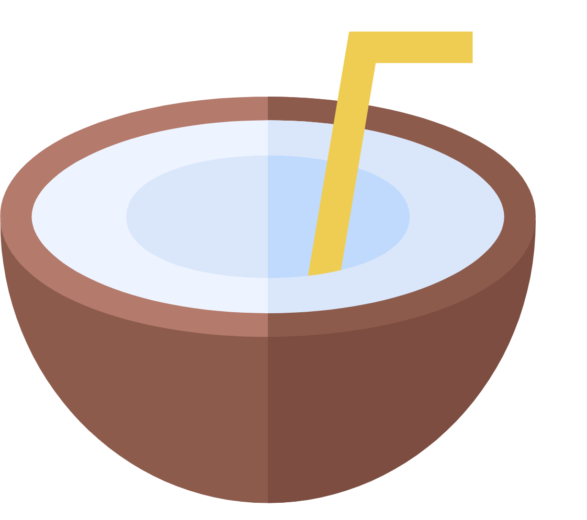

Coffee is not good.
A map of this page:
Determining whether coffee is healthy or not depends largely on how you interpret the word healthy. If your aim is to enjoy a satisfying drink that is low in calories, carbohydrate, and fat, then a plain black cup of coffee certainly fits the bill.
The following nutrition information is provided by the USDA for 1 cup (270g) of black coffee with no cream or sugar added.
Coffee only becomes a dietary concern when you start adding ingredients such as milk, flavorings, syrups, sugar, and whipped cream. By this point, a single coffee drink can pack as many calories and fat as an extra-large slice of cake.
Consider that one 16-ounce Starbucks Java Chip Frappuccino drink weighs in at no less than 430 calories with 12 grams of saturated fat and 72 grams of net carbs. That one drink is equal in nutritional value to 18 Chips Ahoy chocolate chip cookies.
Here is a famous quote:
Everyone should believe in something. I believe I will have another coffee.

While this may suggest that a plain cup of coffee without milk or other add-ins is good for you, it is really
only good
in that it doesn't add any calories. Besides delivering a trace amount of potassium, coffee has
no
real nutritional value and different types of related drinks deliver more calories than needed.
| Type of coffee | 12-ounce serving | 16-ounce serving | 20-ounce serving | |||
|---|---|---|---|---|---|---|
| Cappuccino | 10 g carbs | 80 - 120 calories | 15 g carbs | 100 - 180 calories | 17 g carbs | 130 - 210 calories |
| Latte | 16 g carbs | 120 - 200 calories | 21 g carbs | 60 - 260 calories | 27 g carbs | 210 - 340 calories |
| Mocha | 28 - 37 g carbs | 170 - 358 calories | 33 - 42 g carbs | 210 - 433 calories | 43 - 56 g carbs | 260 - 490 calories |

Click here for the original source of this information.
Click on anything to go to its Wikipedia page.
For example: the plant, the notebook, the pen, the laptop, the coffe cup, or the hand
L I F
E R N F E
T' D K O E
S C !